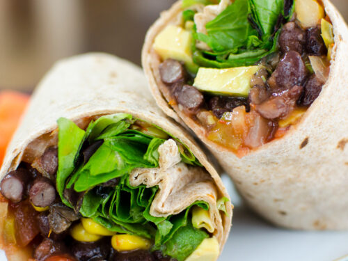

Black Bean Wraps

Vegetable Dalia is prepared with Dalia / broken wheat. Dalia is also known as Cracked wheat / Broken wheat. It is a traditional Indian Super Food/Grain often used in every Indian household.
It is also known as Bulgur Wheat, Broken wheat, Ghau na Fada, Burghul, or Couscous. It is made by milling the raw wheat grains coarsely, which is then cleaned, husked, and processed to the required size.
Ingredients
- 1 1/2 cups canned low-sodium black beans, rinsed and drained
- 1 1/2 cups frozen corn kernels, thawed to room temperature.
- 3 tablespoons chopped fresh cilantro.
- 2 tablespoons chopped green chili peppers (seeds removed)*
- 4 green onions, diced (including green stems)
- 1 tomato, diced
- 1 tablespoon chopped garlic
- 6 fat-free whole-grain tortilla wraps, 10 inches in diameter
- 3/4 cup shredded cheddar cheese
- 3/4 cup salsa
Instructions
- In a microwave-safe bowl, add the black beans, corn, cilantro, chili peppers, onions, tomato and garlic.
- Stir to mix evenly. Microwave on high power for 30 seconds to 1 minute.
- Stir and heat again for 30 seconds to 1 minute. Repeat until the mixture is hot.
- Place 2 tortillas between paper napkins or paper towels and warm in the microwave for 20 seconds on high. Repeat with the remaining tortillas.
- To serve, place about 1/2 cup bean mixture on 1 tortilla.
- Top with 2 tablespoons cheese and 2 tablespoons salsa.
- Fold in the sides and fold the bottom of the tortilla up over the filling, then roll to close. Repeat with the remaining tortillas and serve immediately.